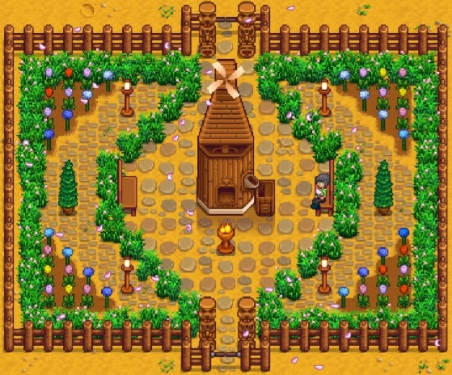

<!DOCTYPE html>
<html lang="en">
	<meta charset="utef-8">
	<title>Stardew Valley</title>
</html>
<body>
	  <ul>
    <li><a href="index.html">Home</a></li>
    <li><a href="page2.html">Stardew Valley</a></li>
    <li><a href="page3.html">Relaxing activities</a></li>
  </ul>
	<h1>Stardew Valley</h1>
	<p>Stardew Valley was a game that was originally released for Windows on February 26, 2016. In this game you've just inhereted your grandfather's old farm plot. Armed in hand-me-down tools and a few coins, you set out to begin your new life.</p>
	
	<p>The days can feel short in the game when there's a lot you want to get done.</p>
	<p>But it's a great way to prioritize and manage your time effectively, even in game.</p>
	
	<p>There are a lot of ways to get creative in the game. A lot of different ways to stay hooked and spending hours and hours in your Stardew Valley farm.</p>
	
</body>
